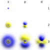

electron

Definition: The electron (e− or β−) is a subatomic particle with a negative one elementary electric charge. Electrons belong to the first generation of the lepton particle family, and are generally thought to be elementary particles because they have no known components or substructure. The electron's mass is approximately 1/1836 that of the proton. Quantum mechanical properties of the electron include an intrinsic angular momentum (spin) of a half-integer value, expressed in units of the reduced Planck constant, ħ. Being fermions, no two electrons can occupy the same quantum state, per the Pauli exclusion principle. Like all elementary particles, electrons exhibit properties of both particles and waves: They can collide with other particles and can be diffracted like light. The wave properties of electrons are easier to observe with experiments than those of other particles like neutrons and protons because electrons have a lower mass and hence a longer de Broglie wavelength for a given energy.
Source: Wikipedia
Wikipedia Page (Something wrong with this association? Let us know.)
Wikidata Page (Something wrong with this association? Let us know.)
Occurs in: